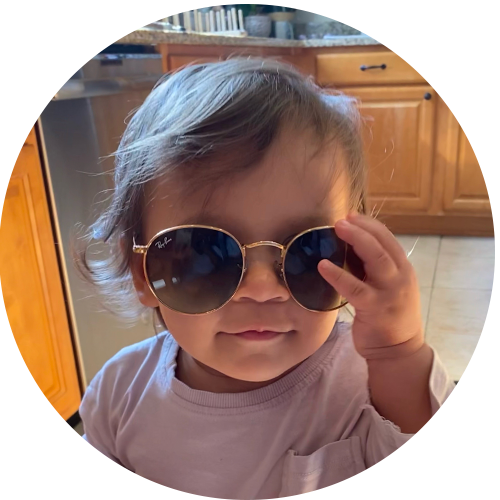
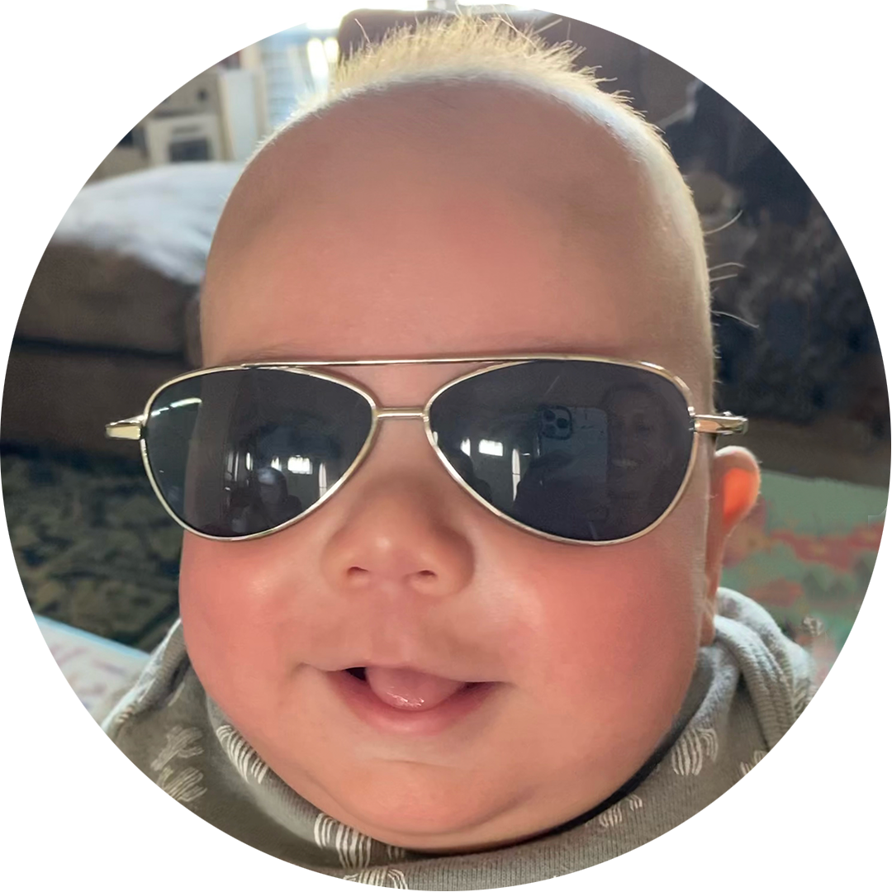

I’m a founder at Thrill Wave and
Computer Science student at ASU. I’m an ex-Amazon worker whose passion
was piqued in engineering. I aspire to make cool things with modern
tech and human-centric design to innovate the way we live.
💡 Fun facts: I’ve produced 70% of the world’s Crown
Royal whisky (no ‘e’ in whiskey means it’s from Canada) 🥃, shipped
over 350MM sodas 🚚, made a
commercial
that aired during the Olympics and launched a
$15.6MM department at
Amazon. I’m excited to contribute further with my start-up, Thrill Wave and
a career path with my Computer Science degree.
🧍🏽♂️ In my spare time, I like to exercise, volunteer for
ACDR, play
music, take photos and make videos. With music, I’ve had mine featured
in Complex magazine and performed with
Pusha T. With videos, I’ve filmed for Shaq and
Diplo— ask me about it sometime!
Testimonials
Here’s a testimonial from my 3-year-old niece:

★★★★★ 5.0
Ari is fun but can also be serious
(He also overuses parenthesis). He’s resourceful, helpful and
eager to learn. If you want to boost your biz with a capable
personality hire, look no further!
Lyla Niece @ Ari Everett
And, my 1-year-old nephew:
★★★★★★ 6.0
I was literally just born.
but he’s valid
Benji Nephew @ Ari Everett

Writings
I’ve found that writing is a great way to get big thinks out of my
head and make a concrete statement. It’s a cathartic and powerful way
of communication. Here’s a blog of things I’ve written about (or plan
to write about).
This website also serves as an archive and expose of my life’s work;
personal, academic and professional. It’s a central nexus of key
output that I’m proud of.
Drop me a line or shoot me a text to talk about how I can help you, or
if you simply want to chat. I love speculating (with others) on how
the world changes via tech, culture, markets and progress.